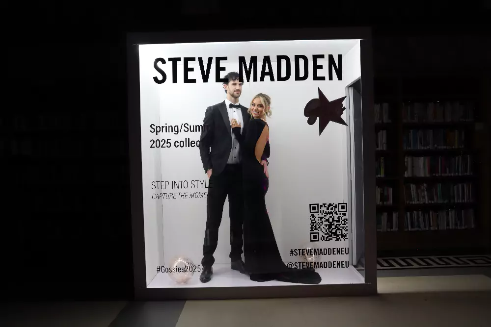
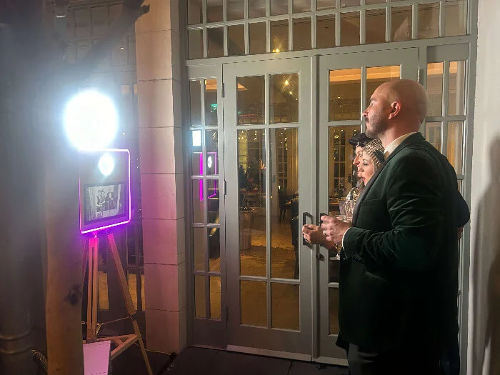

County Kildare
County Kildare is renowned for world-class venues that attract couples and corporate clients from across Ireland and beyond. From the stately grandeur of Carton House to the championship prestige of the K Club, Kildare offers a calibre of setting that demands equally premium entertainment at these iconic venues. Its proximity to Dublin makes it one of the country's most popular destinations for large-scale weddings and high-profile corporate events, and our photo booths are the perfect complement to these extraordinary spaces.
Events We Cover
Carton House, Killashee Hotel, and Barberstown Castle are just a few of the Kildare wedding venues where our booths have entertained hundreds of guests. Explore wedding booths.
High-profile conferences and incentive events at the K Club, executive retreats at Moyvalley Hotel, and company celebrations across Kildare. See corporate options.
Milestone birthdays at Killashee Hotel, engagement parties at Palmerstown Estate, and private celebrations at Kildare's finest restaurants and country houses. Browse party booths.
Product launches at Kildare Village, sponsor activations at racing events, and experiential marketing campaigns across the county. See branded options.
Festive season celebrations at Carton House, company Christmas dinners at the K Club, and holiday gatherings at hotels throughout Naas, Newbridge, and Maynooth. Festive booth options.
Kildare's horse racing heritage brings unique event opportunities — from Punchestown Festival hospitality suites to Curragh race day celebrations and sporting club dinners. See all booths.
Our Fleet
These three booths are our top picks for Kildare's grand venues and outdoor spaces. Each includes professional delivery, full setup, a dedicated attendant, and packdown.
 From €680
From €680
Professional DSLR photography with studio-grade lighting and interchangeable backdrops, designed for the spacious ballrooms and manicured grounds of Kildare's premier venues. Accommodates large groups effortlessly, making it ideal for Carton House weddings and K Club galas.

From €1,200Give your Kildare event guests the celebrity treatment with custom magazine cover layouts, editorial-quality lighting, and high-resolution prints they will treasure. A standout addition to fashion-forward weddings and brand-conscious corporate functions.

From €680A beautifully crafted wooden tripod housing a professional DSLR camera — minimal, elegant, and full of character. It pairs perfectly with the heritage architecture of venues like Barberstown Castle and Palmerstown Estate.
Kildare Service
Kildare's venues are among Ireland's most impressive. Our booths are designed to complement grand ballrooms, historic estates, and manicured grounds — not look out of place. We match the calibre of the setting every time.
Many Kildare events take advantage of the stunning grounds at Carton House or the K Club. Our booths are outdoor-compatible with weather covers and battery backups, giving you flexibility to set up wherever the best backdrop is.
For Kildare's thriving corporate events scene, we offer end-to-end branding — custom start screens, company logos on every print, branded digital galleries, and colour-matched overlays that align with your corporate identity.
Questions
Kildare photo booth hire starts from €680 for our open air or vintage tripod booths. Selfie mirrors start from €730, 360 booths from €750, and premium magazine booths from €1,200 depending on hire duration and bespoke features. Get a free Kildare quote.
Yes, we have set up at Carton House on numerous occasions. We are familiar with the ballroom, the various function suites, and the grounds. We work directly with the Carton House events team to ensure smooth load-in, ideal booth placement, and a flawless guest experience.
Kildare falls comfortably within our standard service area. Travel fees are minimal and frequently waived for popular Kildare venues. We always state the exact cost in your personalised quote — no hidden charges ever.
Several of our booths are fully outdoor-compatible. For garden receptions at Palmerstown Estate or marquee events at the K Club, we bring weather-resistant covers and battery backup options. We always recommend having a covered contingency area available, but in our experience, many Kildare outdoor setups go off without a hitch.
Absolutely. We provide fully branded photo booth experiences with custom welcome screens, company logos on every photo print, corporate colour schemes on overlays, and branded digital galleries. The K Club's world-class conference and hospitality facilities paired with our branding capabilities create a premium corporate entertainment package.